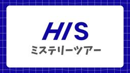
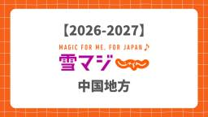
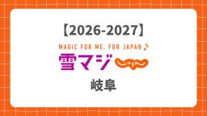
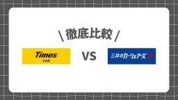
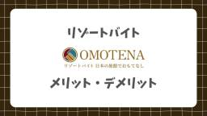
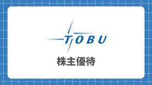

nrtlog.com
https://nrtlog.com/
nrtlog.com
フィード
【2026-27】雪マジが使える新潟のスキー場まとめ！苗場・かぐら・湯沢中里など21施設と東京からのアクセス、おすすめを紹介！
nrtlog.com
【2026年-2027年シーズン版】雪マジが使える新潟のスキー場まとめ。苗場・かぐら・湯沢中里など対象ゲレンデ21施設を、無料で利用できる日やエリア別のおすすめ、東京からのアクセスとあわせて解説！平日のみ無料の施設が多いなど新潟で使うときの注意点も紹介！
9時間前
【2026-27】雪マジが使える北陸のスキー場まとめ！富山・石川・福井7施設とアクセス、おすすめを紹介！
nrtlog.com
【2026年-2027年シーズン版】雪マジが使える北陸のスキー場まとめ。富山・石川・福井の対象ゲレンデ7施設を、無料で利用できる日やエリア別のおすすめ、金沢・富山からのアクセスとあわせて解説！平日のみ無料の施設など北陸で使うときの注意点も紹介！
1日前
マリーナベイ・サンズの展望台に無料で入る方法！楽天・ANAのステータスマッチを徹底解説！
nrtlog.com
マリーナベイ・サンズのステータスマッチを徹底解説！楽天ダイヤモンドやANAのダイヤモンド・プラチナ・SFC、三井住友カード、JCBのステータスからエリートやプレステージにマッチでき、展望デッキの無料チケットがもらえます。条件や期限、やり方まで紹介！
1日前

【ネタバレ】HISミステリーツアーの行き先はどこ？ブラックフライデーは本当にお得？過去の結果も大公開！
nrtlog.com
【ネタバレ注意】HISのミステリーツアーを徹底解説！実際の行き先を独自のノウハウと過去の実績を元に予想！通常ツアーと比べたお得度や参加における注意点、国内ミステリーバスツアーや申し込み方法も！
2日前

【2026-27】雪マジが使える中国地方のスキー場まとめ！広島・大山など9施設と広島からのアクセス、おすすめを紹介！
nrtlog.com
【2026年-2027年シーズン版】雪マジが使える中国地方のスキー場まとめ。広島・鳥取・島根・岡山の対象ゲレンデ9施設を、無料で利用できる日やエリア別のおすすめ、広島からのアクセスとあわせて解説！曜日限定の施設など中国で使うときの注意点も紹介！
2日前

eSIM-sanはやめとけ！口コミ・評判と実際に使ってわかったメリット・デメリット、もっと安いおすすめeSIMを紹介！
nrtlog.com
eSIM-sanはやめとけと言われる理由を口コミと料金で検証。韓国・台湾5日間の料金をAiralo・Holafly・Klookと比較し、日次プランの仕組みやアプリがない不便さなど、安さだけで選ぶと損するポイントとさらに安い・お得なおすすめeSIMを紹介！
2日前

Suicaの新キャラクターはB案の紫のうさぎ！「毒うさぎ」と呼ばれる理由と投票結果、愛称の応募方法を解説！
nrtlog.com
Suicaの新キャラクターがB案の紫のうさぎに決定。投票結果や「毒うさぎ」と呼ばれる理由、ファンアートで人気になるまでの賛否の経緯、愛称の応募方法、ペンギンが2027年3月31日に卒業するまでの流れを解説！
3日前

【2026-27】雪マジが使える岐阜のスキー場まとめ！奥美濃・飛騨など11施設と名古屋からのアクセス、おすすめを紹介！
nrtlog.com
【2026年-2027年シーズン版】雪マジが使える岐阜のスキー場まとめ。奥美濃・飛騨の対象ゲレンデ11施設を、無料で利用できる日やエリア別のおすすめ、名古屋からのアクセスとあわせて解説！平日のみ無料の施設が多いなど岐阜で使うときの注意点も紹介！
3日前

【2027年】中国の観光ビザ免除の延長は？今後の予想と代替のトランジットビザ観光方法を紹介！
nrtlog.com
中国ビザ免除の最新動向と今後の再開・延長予想を徹底考察！ビザなし渡航が不可となった場合の対策として、144時間トランジットビザ免除を活用した上海・深圳などの観光モデルや中国東方航空などの最新情報も紹介！
3日前

【徹底比較】タイムズカーと三井のカーシェアーズはどっちがいい？料金やステーション数・車種をどちらも愛用する筆者が徹底解説！
nrtlog.com
タイムズカーと三井のカーシェアーズはどっちがいい？料金・距離料金・学生プランを両方使って徹底比較。6時間ドライブは三井が1,200円以上安いなど、使い方別のシミュレーションで違いやお得に使う方法を解説！
4日前

ベストウェスタンが国内で消滅！？ポラリス運営の6軒がKOKO HOTELSへリブランド！リワーズは12月1日で終了
nrtlog.com
ポラリス運営のベストウェスタン6軒がKOKO HOTELSへ順次リブランド！12月1日に千歳・大阪北浜・大阪塚本が先行切替で、Best Western Rewardsは11月30日で終了。対象ホテルと切替時期、後継のirodori passを解説！
5日前

OMOTENA(オモテナ)のリゾートバイトとは？特徴やメリット・デメリット、登録方法を徹底解説！
nrtlog.com
リゾートバイト派遣のOMOTENA(オモテナ)を徹底解説！ホテル・旅館に特化した求人の特徴や、実務経験者のコーディネーターによる専任サポート、寮・食事や給与前払い、登録から就業までの流れ、メリット・デメリットまで！実際に担当者に問い合わせて紹介！
5日前
【2026-27】雪マジが使える群馬のスキー場まとめ！草津・水上など6施設と東京からのアクセス、おすすめを紹介！
nrtlog.com
【2026年-2027年シーズン版】雪マジが使える群馬のスキー場まとめ。水上・草津・嬬恋の対象ゲレンデ6施設を、無料で利用できる日やエリア別のおすすめ、東京からのアクセスとあわせて解説！平日のみ無料の施設など群馬で使うときの注意点も紹介！
5日前

【愛用者が解説】東武鉄道の株主優待乗車証の使い方！安いのはどこ？金券ショップの相場の比較や日光など全線片道がお得な区間を解説！
nrtlog.com
東武鉄道の株主優待乗車証を愛用している筆者が解説。1枚で東武線全線を片道乗れる乗車証の株数別枚数や特急での使い方、日光・鬼怒川などお得になる区間と金券ショップの相場、入手方法と注意点を紹介！
6日前
【2026-27】雪マジが使える福島のスキー場まとめ！猪苗代・裏磐梯など11施設と東京からのアクセス、おすすめを紹介！
nrtlog.com
【2026年-2027年シーズン版】雪マジが使える福島のスキー場まとめ。猪苗代・裏磐梯・会津の対象ゲレンデ11施設を、無料で利用できる日やエリア別のおすすめ、東京からのアクセスとあわせて解説！グランデコやネコマなど平日のみ無料の施設など福島で使うときの注意点も紹介！
6日前
マリーナベイ・サンズは倒壊する？傾きの理由と安全性を実際に行って徹底検証！
nrtlog.com
マリーナベイ・サンズは倒壊する？傾きはトランプをモチーフにした設計が理由！現地で撮影した写真とあわせて、埋立地への不安や名探偵コナン『紺青の拳』の崩落シーンで広まった噂の出どころと、基礎や緊張材などの構造から安全性を徹底検証！
7日前

【徹底比較】プライオリティパスが無料で付く最安のクレジットカードは？用途別におすすめを紹介！
nrtlog.com
プライオリティパスが無料で付くクレジットカードを年会費の安い順に徹底比較！最安は楽天プレミアム、無制限最安はエポスプラチナ・セゾンプラチナ・ビジネス・アメリカン・エキスプレス®・カード。同伴者料金や家族カード、インビテーションの活用まで！
8日前
【2026-27】雪マジが使える長野のスキー場まとめ！志賀高原・白馬など22施設と東京・名古屋からのアクセス、おすすめを紹介！
nrtlog.com
【2026年-2027年シーズン版】雪マジが使える長野のスキー場まとめ。志賀高原・白馬・軽井沢など対象ゲレンデ22施設を、無料で利用できる日やエリア別のおすすめ、東京・名古屋からのアクセスとあわせて解説！平日のみ無料の施設など長野で使うときの注意点も紹介！
8日前
【チャンギ空港】Jewelの「Changi Lounge」に潜入！到着後・乗り継ぎでも使える？プライオリティパスや料金、シャワー、食事を写真付きで解説！
nrtlog.com
チャンギ空港・Jewelにある「Changi Lounge」の潜入レビュー！一般エリアにあるため到着後や乗り継ぎ時でも利用可能。プライオリティパスでの入場条件や営業時間、場所、清潔な個室シャワー、食事やドリンクの提供内容まで写真付きで解説！
9日前
【2026-27】雪マジが使える関西のスキー場まとめ！滋賀・兵庫の対象ゲレンデ9施設と関西からのアクセス、おすすめを紹介！
nrtlog.com
【2026年-2027年シーズン版】雪マジが使える関西のスキー場まとめ。滋賀・兵庫の対象ゲレンデ9施設を、無料で利用できる日やエリア別のおすすめ、大阪・京都・神戸からのアクセスとあわせて解説！平日のみ無料の施設など関西で使うときの注意点も紹介！
9日前
【中国・桂林】観光おすすめモデルコースを紹介！漓江下り・陽朔での観光・注意点も解説！
nrtlog.com
中国・桂林に実際に訪れた筆者が観光の王道モデルコースを徹底解説！日本から桂林への行き方から、メインの漓江下りクルーズや陽朔の街歩き、桂林市街の絶景スポットまでを紹介！チケットやツアーの予約についても！
10日前
ANAクラウンプラザホテル神戸がIHGを離脱へ！マリオット系列への転換と今後の影響を解説！
nrtlog.com
ANAクラウンプラザホテル神戸が2026年12月1日にIHGを離脱。IHGの通知で分かった予約とポイントへの影響、マリオット系列への転換が濃厚な根拠と新ブランドの予想、神戸のマリオット拡大まで解説！
10日前
J-WESTカードの審査は厳しい？実際に発行した筆者が審査期間や届くまでの日数、落ちる理由を解説！
nrtlog.com
J-WESTカードの審査は厳しい？実際に発行した筆者が、申し込み条件や審査期間、カードが届くまでの日数を解説！収入のない学生でも通過できた実体験と、審査に落ちる理由、お得に申し込む方法も紹介！
11日前
【2026-27】雪マジが使える北海道のスキー場まとめ！対象ゲレンデ一覧とアクセス、おすすめを紹介！
nrtlog.com
【2026年-2027年シーズン版】雪マジが使える北海道のスキー場まとめ。札幌近郊・富良野・トマム・函館・道南の対象ゲレンデ10施設を、無料で利用できる日やエリア別のおすすめ、空港からのアクセスとあわせて解説！平日のみ無料の施設など北海道で使うときの注意点も紹介！
11日前
【JAL深夜便】羽田-シンガポールの搭乗レビュー！機内食や時間、機内の様子を写真付きで紹介！空港や到着後、深夜便の注意点も！
nrtlog.com
JAL羽田-シンガポール深夜便(JL35便)の搭乗記&レビュー！フライトスケジュールや所要時間、深夜の羽田空港でのチェックイン手続き、エコノミークラス座席の広さ、機内食(軽食&朝食)の提供タイミングや実食レビュー、快適に睡眠をとるコツまで詳しく紹介！
12日前
【徹底比較】カーシェアで料金が安い・お得なのはどこ？毎日乗る筆者が用途別に比較！タイムズ・三井のカーシェアーズ・dカーシェア・オリックスカーシェア
nrtlog.com
カーシェアの料金を、タイムズカー・三井のカーシェアーズ・dカーシェア・オリックスカーシェアの4社で比較。月額と時間料金の一覧から、30分・6時間・24時間の料金シミュレーション、用途別のおすすめ、学割についても解説！
13日前
セゾンコバルト・ビジネス・アメックスの入会キャンペーンやポイントサイトはある？お得に作る方法を徹底解説！
nrtlog.com
セゾンコバルト・ビジネス・アメックスの入会キャンペーンを徹底解説。公式特典はAmazonギフトカード最大8,000円分、紹介経由なら条件シンプルに8,000円分。大手ポイントサイトに案件がないことも含め、一番お得な作り方を紹介！
14日前
【2026最新】eSIM・Saily(セイリー)のクーポンコードを紹介！安く買う方法と割引の使い方！
nrtlog.com
Saily(セイリー)のeSIM最新5ドル割引クーポンコードと安く買う使い方を徹底解説。海外旅行・出張で使えるプロモコードの入力手順や割引が使えない・適用されない時の対処法、AiraloやHolaflyとの比較まで分かりやすく紹介！
15日前
【中国・桂林】环球国际酒店(環球インターナショナルホテル)をレビュー！客室・立地・朝食を徹底解説！
nrtlog.com
环球国际酒店[環球インターナショナルホテル](桂林两江四湖象鼻山店)の宿泊記レビュー！空港、高鉄駅からすぐ、観光地へのアクセスも抜群の立地や客室の設備・清潔感、朝食ビュッフェのクオリティを徹底解説！
16日前
【26-27シーズン】雪マジを徹底解説！対象ゲレンデや登録方法、使い方、注意点！19〜22歳はリフト券が無料！
nrtlog.com
【2026-2027シーズン版】じゃらんの雪マジとは？19〜22歳は対象ゲレンデのリフト券が1施設2回まで無料、3回目以降も最大半額になるリクルートの企画を解説。対象の生年月日や登録方法、当日の使い方、全国約130の対象ゲレンデ一覧と対象日や周辺の温泉まで紹介！
16日前